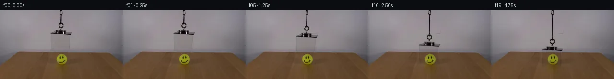
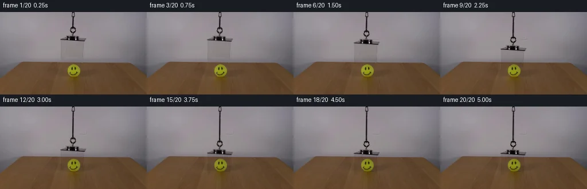
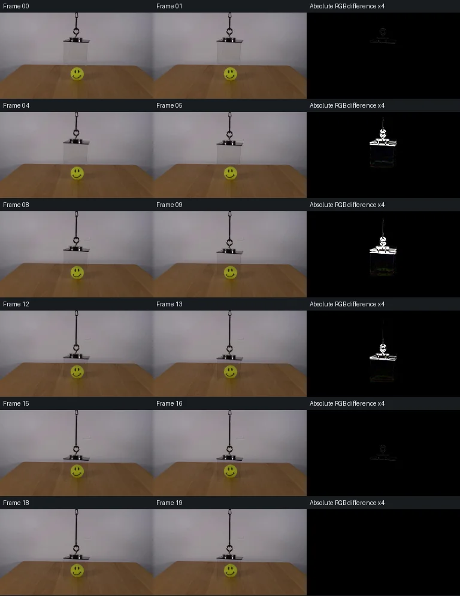

V0 · 初版 · 最终提交
![]()
Observable Generation Trace
把最终像素视频、Harness 冻结的每轮候选、真实工具事件和 Agent 自述放在同一页。可观测证据与模型自述分开标记，避免把“模型说它检查过”误当成真实工具调用。
![首帧]()
Static locked-off single-shot with fixed frame throughout filmed with constant framerate in real-time. The scene shows a realistic scientific demonstration. The scene only contains the described setup and actions. The clear acrylic box was suspended over the tennis ball with a smiley face. The tennis ball with the smiley is positioned on a wooden table. The clear acrylic box hanging from an orange cord lowers to cover the tennis ball with a smiley face.
首帧显示在左侧播放器初始画面。Track 权限、隔离和 tensor 一致性来自 run manifest，而不是 METHOD.md。
默认勾选初版和最终版；可选其他版本一起同步播放。仅检查图更新的连续重复快照已合并，回退旧视频仍保留为一次修订。
Observable events
来源：events.jsonl + run manifest
此 Track 禁止读取输出图片。逐轮预览由外部 Harness 自动冻结，只用于事后审计，生成 Agent 当时看不到这些页面。
Frozen candidates
每张图来自该 round 的真实 00 / 01 / 05 / 10 / 19 帧

pixels 4105bacd7abda964 · code 4601851774f7d4eb
--- previous/generate.py +++ current/generate.py @@ -0,0 +1,237 @@ +"""Local measured-pixel transport for the suspended acrylic-box demonstration. + +No image viewing, external assets, trained models, or rendering engines are used. +""" +from pathlib import Path +import base64 +import json +import re + +import numpy as np +from PIL import Image, ImageDraw +from scipy.ndimage import gaussian_filter, map_coordinates + +import artifact_io + + +ROOT = Path(__file__).resolve().parent +H, W = 144, 256 +YY, XX = np.mgrid[:H, :W].astype(np.float64) + + +def smoothstep5(u): + u = np.clip(u, 0.0, 1.0) + return u**3 * (10.0 - 15.0*u + 6.0*u*u) + + +def sample(field, sy, sx): + """Bilinear subpixel sampling with transparent pixels outside the image.""" + if field.ndim == 2: + return map_coordinates(field, [sy, sx], order=1, mode='constant', cval=0.0) + return np.stack([ + map_coordinates(field[..., c], [sy, sx], order=1, + mode='constant', cval=0.0) + for c in range(field.shape[-1]) + ], axis=-1) + + +def backdrop(source): + """Fit only source gray-backdrop samples outside the suspended setup.""" + result = source.copy() + columns = np.r_[np.arange(83, 105), np.arange(152, 177)] + x_fit = (columns - 128.0) / 48.0 + x_mid = (np.arange(103, 152) - 128.0) / 48.0 + for y in range(9, 88): + for c in range(3): + coeff = np.polyfit(x_fit, source[y, columns, c], 3) + result[y, 103:152, c] = np.polyval(coeff, x_mid) + # Preserve the original mild quantization/texture rather than introducing + # a smooth gradient with different photographic noise characteristics. + texture = source[:88, 70:119] - gaussian_filter( + source[:88, 70:119], sigma=(1.0, 1.0, 0.0)) + result[9:88, 103:152] += 0.26 * texture[9:88] + return result + + +def extraction_mask(): + """Numeric, manually measured local supports; no external segmentation.""" + mask = np.zeros((H, W), np.float64) + # Straight cord, lower ring, and attachment. The upper ring is fixed. + mask[9:26, 123:132] = 1.0 + mask[26:40, 120:135] = 1.0 + # Top mount and walls. Gray pixels around the setup supply an edge taper. + mask[40:88, 103:152] = 1.0 + x_taper = np.clip(np.minimum(XX - 103.0, 151.0 - XX) / 2.0, 0, 1) + mask[40:88] *= x_taper[40:88] + # The bottom's measured diffuse reflection fades into the gray backdrop. + mask[86] *= 0.7 + mask[87] *= 0.25 + return mask + + +def optical_fields(source, clean, support): + """Affine C_out = transmission * C_under + reflected source detail. + + The least channel ratio gives an absorption term. The remaining RGB + residual reproduces the source highlights and the acrylic's mild tint. + At zero displacement this reconstructs the source exactly. + """ + ratio = np.min(source / np.maximum(clean, 1.0), axis=-1) + absorption = np.clip(1.0 - ratio, 0.0, 1.0) * support + reflection = (source - clean*(1.0-absorption[..., None])) * support[..., None] + return absorption, reflection + + +def segment_distance(x, y, ax, ay, bx, by): + vx, vy = bx-ax, by-ay + u = np.clip(((x-ax)*vx + (y-ay)*vy)/(vx*vx+vy*vy), 0, 1) … diff truncated; 150 more lines …
Final visual checks
Harness 保存的最终产物


Agent claims
以下文字由生成 Agent 撰写，不等同于工具证据
The source was inspected with Pillow/NumPy RGB sampling and numerical row profiles. No image Read/View tool was used. The source is RGB, 256 × 144 pixels.
The box will descend vertically by 34 pixels, bringing its lower edge to approximately y=114, at the ball's table contact level. Its top reaches y=76–84, leaving the ball enclosed and visible through the walls. The lower hook translates rigidly with the box; the visible cord length increases. No camera movement, added objects, ball motion, or cuts.
Frames are sampled at a constant 4 fps. Frame 00 is copied exactly from the input. Lowering follows a smooth acceleration/deceleration curve over frames 01–16; frames 17–19 hold the covered position. Offsets are planned approximate values and will be recorded precisely by the generator.
| Frame | Time (s) | Vertical offset (px) | Event |
|---|---|---|---|
| 00 | 0.00 | 0.00 | Exact source; box suspended above ball. |
| 01 | 0.25 | 0.08 | Lowering begins gently. |
| 02 | 0.50 | 0.55 | Cord pays out; box remains aligned. |
| 03 | 0.75 | 1.66 | Smooth downward acceleration. |
| 04 | 1.00 | 3.52 | Box approaches the ball. |
| 05 | 1.25 | 6.12 | Lower rim reaches ball's upper region. |
| 06 | 1.50 | 9.36 | Ball begins to lie behind clear walls. |
| 07 | 1.75 | 13.06 | Steady lowering. |
| 08 | 2.00 | 17.00 | Box halfway down; face stays visible. |
| 09 | 2.25 | 20.94 | Clear walls pass around ball. |
| 10 | 2.50 | 24.64 | Ball enclosed farther down. |
| 11 | 2.75 | 27.88 | Downward speed decreases. |
| 12 | 3.00 | 30.48 | Lower rim approaches tabletop. |
| 13 | 3.25 | 32.34 | Controlled final approach. |
| 14 | 3.50 | 33.45 | Near contact. |
| 15 | 3.75 | 33.92 | Almost seated on tabletop. |
| 16 | 4.00 | 34.00 | Box covers ball; cord stays attached. |
| 17 | 4.25 | 34.00 | Hold. |
| 18 | 4.50 | 34.00 | Hold. |
| 19 | 4.75 | 34.00 | Final covered state. |
Estimate the occluded gray background from neighboring source pixels, remove only the moving setup, and transport the source's measured acrylic transmission and reflection details as a subpixel layer. Preserve the source ball and table texture under the transparent layer. Extend the cord from the source's own narrow pixel strip. Add only a subtle, localized rim contact shadow as the box reaches the table. Validate frame/tensor consistency, unchanged scene regions, displacement, and transition magnitudes numerically. Generate inspection sheets without claiming visual review.
This is a local pixel continuation of the provided first frame. The implementation uses Python, NumPy, Pillow, and SciPy array interpolation/filtering. It uses no external images, reference footage, trained models, network access, subagents, or external rendering/physics engine. The input and output were inspected through numeric RGB values and numerical checks. No image Read/View tool was used, and no visual review is claimed.
The camera, gray backdrop, wooden table, smiley tennis ball, and original ball shadow stay fixed. The source acrylic box, its top mounting block, and the lower hanging loop move vertically downward. The top cord attachment remains fixed and the narrow source cord strip is stretched as more cord becomes visible. The box lowers 34 pixels over frames 00–16, then holds through frame 19. Its front lower rim finishes at approximately y=115, with the ball inside the clear walls.
The displacement is 34 * (10u^3 - 15u^4 + 6u^5), with u = min(frame_index / 16, 1). This provides smooth start and stop under constant 4 fps sampling. There is no lateral motion, swing, cut, camera adjustment, ball deformation, or added actor.
clip(1 - min(source / clean), 0, 1). The reflection residual is chosen so that clean * (1 - absorption) + reflection exactly reconstructs the original pixels. Dark mounting parts are nearly opaque; the photographed acrylic walls transmit most of the underlying image; the source's small white highlights are retained.0xRRGGBB in a tensor of shape (144, 256, 20).The hidden background is an estimate from source pixels, and the transparent box is modeled with measured two-dimensional optical layers. These are the actual reconstruction approximations, not a full physical or three-dimensional simulation.
pixels.npz contains the uint32 pixels tensor with shape (144, 256, 20) and values no greater than 0xFFFFFF.Detailed offsets, transition measurements, and equality results are saved in verification.json. inspection.png is an eight-frame contact sheet. transition_check.png contains six before/after pairs with amplified absolute RGB differences. These are generated inspection artifacts; their creation does not imply that they were viewed with an image tool.
Run python generate.py from this workspace to regenerate the pixel tensor, the 20 frame PNGs, the two inspection sheets, the standalone 4 fps player, and the verification report. The pre-coding measurements and complete twenty-frame event plan are in OBSERVATION.md.